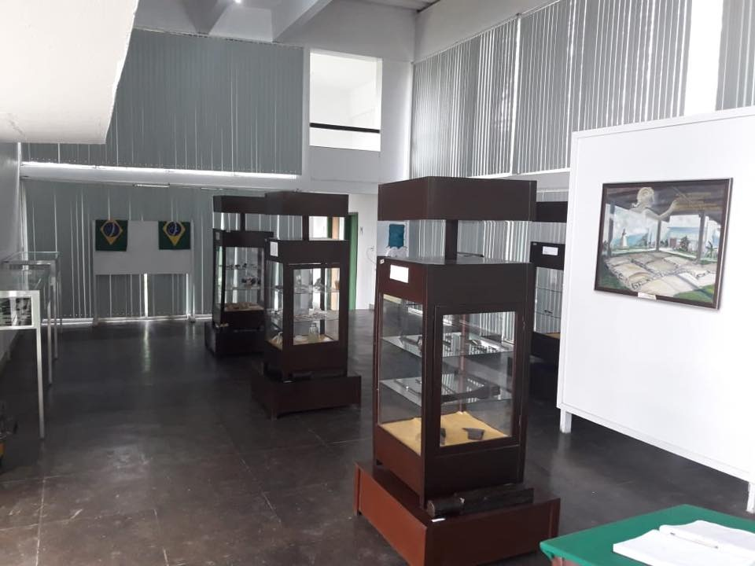

Museu Histórico de Duque de Caxias:
O Museu Histórico do Duque de Caxias e da Taquara ocupa o lugar que foi sede da Fazenda São Paulo, berço do Patrono da Cidade e do Exército, Marechal Luiz Alves de Lima e Silva, na Avenida Automóvel Clube. Há exposição de peças de armas da época, algumas usadas pelo marechal, e de utensílios domésticos de sua família. Há ainda exposições sobre a história do patrono e outra permanente, com o acervo arqueológico da cidade.
Horário de funcionamento:
sexta-feira 09:00–17:00
sábado 09:00–17:00
domingo 09:00–17:00
segunda-feira Fechado
terça-feira 09:00–17:00
quarta-feira 09:00–17:00
quinta-feira 09:00–17:00
VALOR: GRATUITO
Endereço: Av. Automóvel Clube, S/n - Taquara, Duque de Caxias - RJ, 25045-002